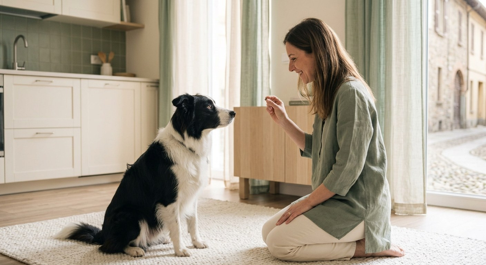

Il Metodo Argo · Manuale
Ventuno giorni, tre fasi, cinque profili. La mappa completa del percorso.
Fase 1 · Fondamenta
1 — Il patto
2 — Il mio nome non è «No»
3 — La parola magica
4 — Seduto (ma sul serio)
5 — L'arte di non fare niente
6 — Aspetta, che fretta c'è
7 — Il tagliando
Fase 2 · Il tuo modulo
Il Trattore
Lo Squalo
L'Esploratore Sordo
Il Velcro
Il Tornado
Bonus SOS Pipì
nove giorni su misura
Prima di partire: il linguaggio di Argo · le tre regole d'oro · quando serve un professionista
Fase 3 · Consolidamento
17 — Il mondo là fuori
18 — Distrazioni professionali
19 — Ospiti a casa
20 — Una giornata vera
Il diploma
Il test finale · la festa · il piano di mantenimento · il tracker
Fase
Sette giorni per costruire il linguaggio comune. Sembrano esercizi piccoli: sono le fondamenta di tutto.
Giorni 1–7 · uguale per tutti
Il nome che funziona. La parola magica. La calma su richiesta. L'autocontrollo che si installa in silenzio.
Ogni giorno costruisce sul precedente: l'ordine non è casuale, e il giorno 7 si collauda tutto — come si deve, col tagliando.
«Prima di insegnarmi qualcosa,
impara ad ascoltarmi.»
Quando mi chiami, vinco qualcosa.
Sai qual è la parola che sento più spesso? «No». A volte penso sia il mio secondo nome. Oggi sistemiamo la cosa più importante di tutte: quando dici il mio nome, io mi volto verso di te. Non per magia — perché conviene.
Noi cani non «sappiamo» il nostro nome come lo sapete voi. Per noi è un suono, e un suono vale quanto ciò che lo segue. Nome → cose belle = suono da non perdersi. Nome → sgridata = suono da cui sparire.

🎯 Missione del giorno — il gioco del nome · 5 min × 3
Stanza tranquilla, premietti piccoli in tasca — qui non serve l'Artiglieria.
Di' il nome UNA volta, voce allegra.
Appena gira la testa: premio dentro la Finestra di Argo — un secondo, non di più.
Non si gira? Non ripetere: avvicinati, riduci la distanza, riprova più facile.
🧠 Dietro le quinte — il suono che diventa riflesso
Condizionamento classico: dopo poche decine di ripetizioni il collegamento è automatico — non una scelta, un riflesso. Lo stesso per cui a voi si muove lo stomaco al tintinnio delle posate.
⚠ Errore umano
Il disco rotto: Rex. Rex! REX!! — ogni ripetizione a vuoto insegna che il nome si può ignorare. E il nome usato per sgridare svuota il conto che stai riempiendo coi premi.
🚑 Pronto soccorso
Non si gira? Troppo lontano: due passi. Ignora il premio? Sessione prima dei pasti. Si lancia addosso? Premia a terra, tra le zampe.
La checklist di oggi
☐ Sessione 1 · 2 · 3
☐ Premio sempre entro 1 secondo
☐ Nessun nome usato per sgridare
argo argo argo
Manifesto
Il tuo cane
non è testardo.
È solo mal tradotto.
Ventuno giorni non per addestrarlo.
Per imparare, in due, la stessa lingua.
Le tre promesse
Mai urlare, mai strattonare, mai punire.
Cinque minuti al giorno valgono più di un'ora la domenica.
Si premia dentro la Finestra: un secondo, non di più.
Infografica · il cuore del metodo
Hai un secondo per dire al tuo cane cosa ha funzionato. Uno. Il marker te lo allunga.
Senza marker: ti chini, cerchi il premio, lo dai — 4 secondi. Il cane nel frattempo ha fatto altre tre cose: quale hai premiato?
Col marker: «Sì!» arriva in 0,3 secondi e fotografa il comportamento. Il premio stampa la foto — anche 3 secondi dopo.
Infografica · fase 3
Ogni distrazione ha un campo gravitazionale. Si lavora appena fuori — e ci si avvicina di due passi alla volta.
Il primo dei cinque profili
Al guinzaglio, quello portato a spasso sei tu.
Ti riconosci? Tre scene dal vero
Tira appena esce — i primi 200 metri sono un rodeo: energia accumulata + un mondo di odori.
Tira quando vede un cane — picco emotivo: il guinzaglio teso lo amplifica.
Tira solo al ritorno — sa dove si va: casa è il premio, e tirare l'ha sempre avvicinata.
🧠 Perché lo fa
Ogni passo avanti ottenuto tirando è un premio incassato. E c'è il riflesso di opposizione: a una trazione il corpo risponde spingendo in direzione contraria. Tu tiri, lui tira. Qualcuno deve smettere per primo — e ha i pollici.
⚠ Errore umano
Lo strattone «correttivo»: un motivo in più per tenere il guinzaglio teso, e uno strappo al collo associato a te.
La roadmap · 9 giorni
8 Perché tiro (spoiler: funziona)
9 L'attrezzatura giusta
10 Il guinzaglio molle paga
11 Un metro alla volta
12 Cambio di direzione
13 La via di casa
14 Distrazioni al guinzaglio
15 La passeggiata vera
16 Test del Trattore
Da fare già oggi: pettorina ad H + guinzaglio 2–3 m. Regola unica: teso = ti fermi, molle = si cammina. In silenzio, come un semaforo.